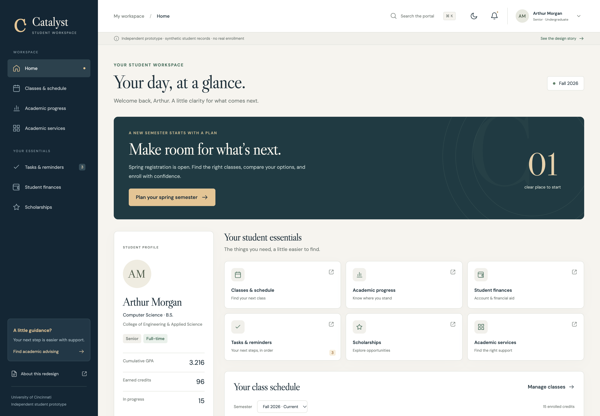
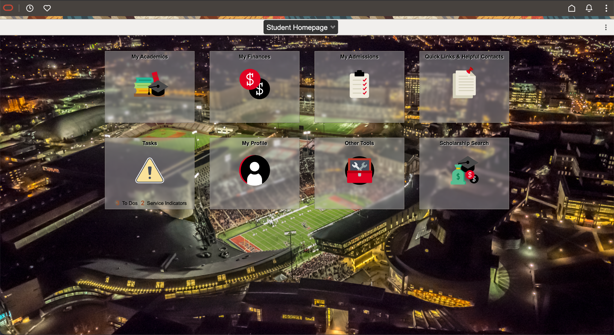
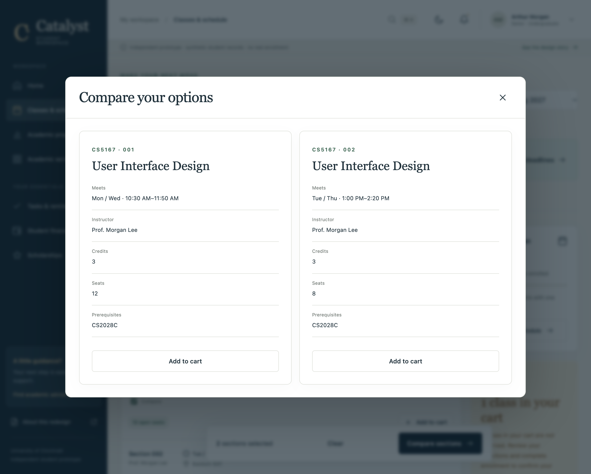
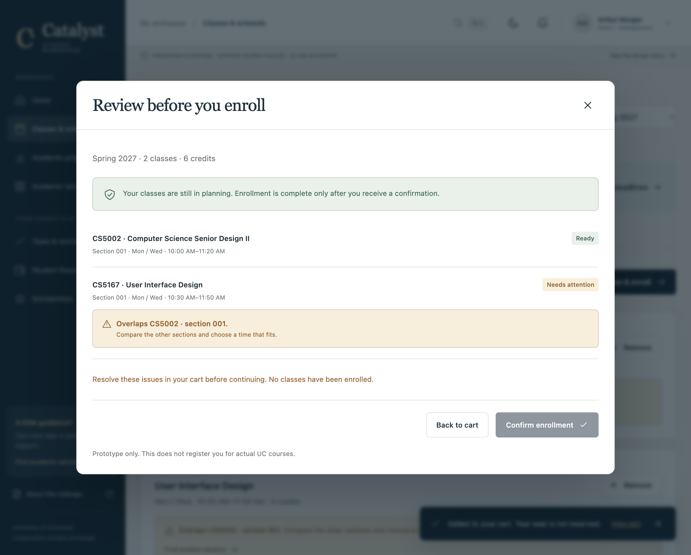
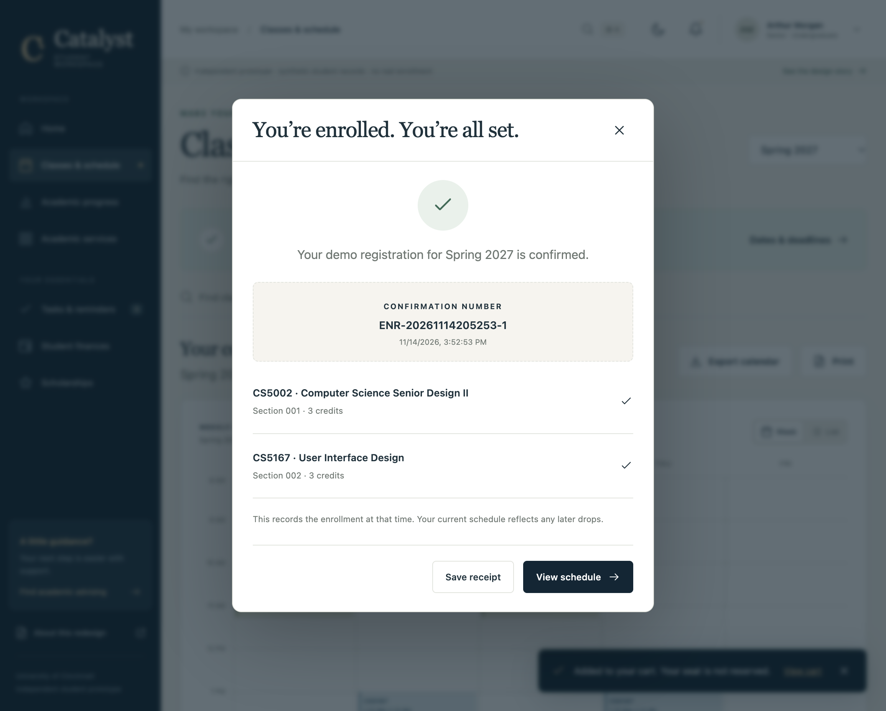
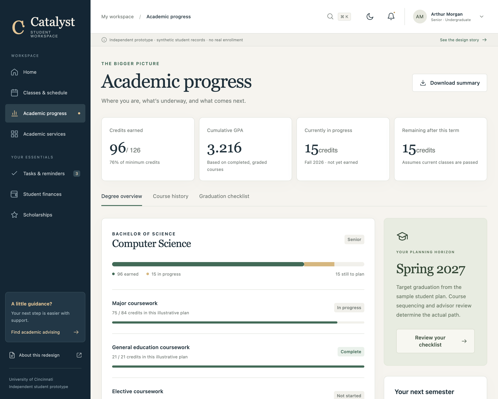

Background research
Nielsen’s heuristics + W3C status-message and reflow guidance.
A clearer path from finding a class
to knowing you’re enrolled.

Where do I go?
Is this class saved, waitlisted, or enrolled?
What do I do when something goes wrong?

Nielsen’s heuristics + W3C status-message and reflow guidance.
Screenshot, critique artifacts, and initial prototype source; specific issues and severity judgments.
Connect tasks. Separate states. Explain recovery.
Search by code, title, or instructor.
Compare sections without losing context.
Keep each semester’s plan separate.

Name the conflict.
Explain the constraint.
Preserve the selection until it is fixed.

Review the complete selection.
Get a dated receipt.
See the confirmed schedule immediately.

Earned ≠ in progress ≠ future enrollment.
Mobile agendas keep meeting details available.
Academic services put support within reach.

Observe real students completing matched tasks; record errors, comprehension, and feedback.
Connect each observation to a change and a follow-up check.
Verified hosting, portfolio link, narrated live demo, and team-reviewed documentation.